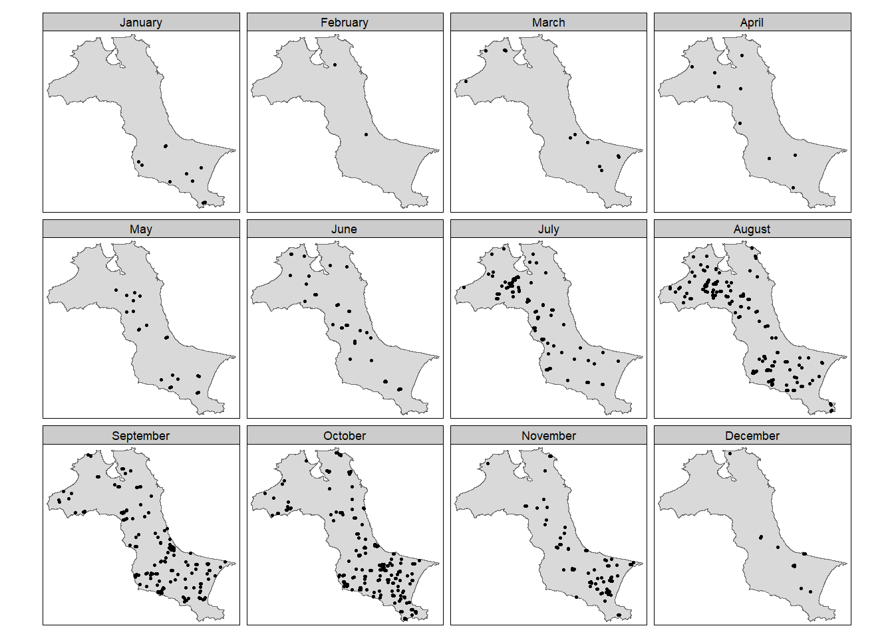

pacman::p_load(sf, raster, spatstat, sparr, tmap, tidyverse)In-class Exercise 3
Spatial Temporal KDE
1. Overall
1.1 The research questions
The specific question we would like to answer is:
- are the locations of forest fire in Kepulauan Bangka Belitung spatial and spatio-temporally independent?
- if the answer is NO, where and when the observed forest fire locations tend to cluster?
1.2 The data
For the purpose of this exercise, two data sets are used, they are:
- forestfires, a csv file provides locations of forest fire detected from the Moderate Resolution Imaging Spectroradiometer (MODIS) sensor data. The data are downloaded from Fire Information for Resource Management System. For the purpose of this exercise, only forest fires within Kepulauan Bangka Belitung will be used.
- Kepulauan_Bangka_Belitung, an ESRI shapefile showing the sub-district (i.e. kelurahan) boundary of Kepulauan Bangka Belitung. The data set was downloaded from Indonesia Geospatial portal. The original data covers the whole Indonesia. For the purpose of this exercise, only sub-districts within Kepulauan Bangka Belitung are extracted.
2. Installing and Loading the R packages
For the purpose of this study, I will be using these five R packages. They are:
- rgdal for importing geospatial data in GIS file format such as shapefile into R and save them as Spatial*DataFrame,
- maptools for converting Spatial* object into ppp object,
- raster for handling raster data in R,
- spatstat for performing Spatial Point Patterns Analysis such as kcross, Lcross, etc., and
- tmap for producing cartographic quality thematic maps.
3. Importing and Preparing Study Area
3.1 Importing Study Area
Let us first import the data using the st_read() function.
kbb <- st_read(dsn="data/rawdata",
layer = "Kepulauan_Bangka_Belitung") Reading layer `Kepulauan_Bangka_Belitung' from data source
`C:\SamanthaxFoo\IS415-GAA\In-class_Ex\In-class_Ex4\data\rawdata'
using driver `ESRI Shapefile'
Simple feature collection with 298 features and 27 fields
Geometry type: POLYGON
Dimension: XYZ
Bounding box: xmin: 105.1085 ymin: -3.116593 xmax: 106.8488 ymax: -1.501603
z_range: zmin: 0 zmax: 0
Geodetic CRS: WGS 84kbbSimple feature collection with 298 features and 27 fields
Geometry type: POLYGON
Dimension: XYZ
Bounding box: xmin: 105.1085 ymin: -3.116593 xmax: 106.8488 ymax: -1.501603
z_range: zmin: 0 zmax: 0
Geodetic CRS: WGS 84
First 10 features:
OBJECTID NAMOBJ FCODE REMARK
1 26195 Airbara BA03070040 <NA>
2 26196 Airgegas BA03070040 <NA>
3 26197 Arung Dalam BA03070040 <NA>
4 26202 Batu Betumpang BA03070040 <NA>
5 26205 Bedengung BA03070040 <NA>
6 26206 Belimbing BA03070040 <NA>
7 26207 Bencah BA03070040 <NA>
8 26209 Berok BA03070040 <NA>
9 26210 Bikang BA03070040 <NA>
10 26212 Bukit Terap BA03070040 <NA>
METADATA SRS_ID KDBBPS KDCBPS KDCPUM
1 TASWIL1000020221227_DATA_BATAS_DESAKELURAHAN 4326 <NA> <NA> 19.03.03
2 TASWIL1000020221227_DATA_BATAS_DESAKELURAHAN 4326 <NA> <NA> 19.03.03
3 TASWIL1000020221227_DATA_BATAS_DESAKELURAHAN 4326 <NA> <NA> 19.04.01
4 TASWIL1000020221227_DATA_BATAS_DESAKELURAHAN 4326 <NA> <NA> 19.03.07
5 TASWIL1000020221227_DATA_BATAS_DESAKELURAHAN 4326 <NA> <NA> 19.03.05
6 TASWIL1000020221227_DATA_BATAS_DESAKELURAHAN 4326 <NA> <NA> 19.04.06
7 TASWIL1000020221227_DATA_BATAS_DESAKELURAHAN 4326 <NA> <NA> 19.03.03
8 TASWIL1000020221227_DATA_BATAS_DESAKELURAHAN 4326 <NA> <NA> 19.04.01
9 TASWIL1000020221227_DATA_BATAS_DESAKELURAHAN 4326 <NA> <NA> 19.03.01
10 TASWIL1000020221227_DATA_BATAS_DESAKELURAHAN 4326 <NA> <NA> 19.03.06
KDEBPS KDEPUM KDPBPS KDPKAB KDPPUM LUASWH TIPADM WADMKC
1 <NA> 19.03.03.2008 <NA> 19.03 19 0 1 Air Gegas
2 <NA> 19.03.03.2001 <NA> 19.03 19 0 1 Air Gegas
3 <NA> 19.04.01.1002 <NA> 19.04 19 0 2 Koba
4 <NA> 19.03.07.2001 <NA> 19.03 19 0 1 Pulaubesar
5 <NA> 19.03.05.2006 <NA> 19.03 19 0 1 Payung
6 <NA> 19.04.06.2009 <NA> 19.04 19 0 1 Lubuk Besar
7 <NA> 19.03.03.2004 <NA> 19.03 19 0 1 Air Gegas
8 <NA> 19.04.01.1017 <NA> 19.04 19 0 2 Koba
9 <NA> 19.03.01.2006 <NA> 19.03 19 0 1 Toboali
10 <NA> 19.03.06.2005 <NA> 19.03 19 0 1 Tukak Sadai
WADMKD WADMKK WADMPR WIADKC WIADKK WIADPR
1 Airbara Bangka Selatan Kepulauan Bangka Belitung <NA> <NA> <NA>
2 Airgegas Bangka Selatan Kepulauan Bangka Belitung <NA> <NA> <NA>
3 Arung Dalam Bangka Tengah Kepulauan Bangka Belitung <NA> <NA> <NA>
4 Batu Betumpang Bangka Selatan Kepulauan Bangka Belitung <NA> <NA> <NA>
5 Bedengung Bangka Selatan Kepulauan Bangka Belitung <NA> <NA> <NA>
6 Belimbing Bangka Tengah Kepulauan Bangka Belitung <NA> <NA> <NA>
7 Bencah Bangka Selatan Kepulauan Bangka Belitung <NA> <NA> <NA>
8 Berok Bangka Tengah Kepulauan Bangka Belitung <NA> <NA> <NA>
9 Bikang Bangka Selatan Kepulauan Bangka Belitung <NA> <NA> <NA>
10 Bukit Terap Bangka Selatan Kepulauan Bangka Belitung <NA> <NA> <NA>
WIADKD UUPP LUAS AREA
1 <NA> Hasil Delineasi Batas Desa 2019 77.160034 77160034
2 <NA> Hasil Delineasi Batas Desa 2019 68.445344 68445426
3 0 Hasil Delineasi Batas Desa 2019 20.759893 20759893
4 <NA> Hasil Delineasi Batas Desa 2019 138.255656 138247711
5 <NA> Hasil Delineasi Batas Desa 2019 96.103135 96102987
6 <NA> Hasil Delineasi Batas Desa 2019 21.356034 21356035
7 <NA> Hasil Delineasi Batas Desa 2019 133.589935 133590216
8 0 Hasil Delineasi Batas Desa 2019 3.196318 3196318
9 <NA> Hasil Delineasi Batas Desa 2019 53.235589 53235592
10 <NA> Hasil Delineasi Batas Desa 2019 18.038894 18038895
geometry
1 POLYGON Z ((106.4285 -2.562...
2 POLYGON Z ((106.4589 -2.692...
3 POLYGON Z ((106.3998 -2.478...
4 POLYGON Z ((106.0563 -2.778...
5 POLYGON Z ((106.2187 -2.679...
6 POLYGON Z ((106.4636 -2.568...
7 POLYGON Z ((106.5133 -2.724...
8 POLYGON Z ((106.4047 -2.477...
9 POLYGON Z ((106.522 -2.8827...
10 POLYGON Z ((106.6278 -2.968...We will need to drop the ‘z’ dimension value from the dataset as we are only working with x,y dimensions, not with height data. Hence, let’s re-read the data and perform some wrangling.
kbb_sf <- st_read(dsn="data/rawdata", layer="Kepulauan_Bangka_Belitung") %>%
st_union() %>%
st_zm(drop = TRUE, what = "ZM") %>%
st_transform(crs = 32748)Reading layer `Kepulauan_Bangka_Belitung' from data source
`C:\SamanthaxFoo\IS415-GAA\In-class_Ex\In-class_Ex4\data\rawdata'
using driver `ESRI Shapefile'
Simple feature collection with 298 features and 27 fields
Geometry type: POLYGON
Dimension: XYZ
Bounding box: xmin: 105.1085 ymin: -3.116593 xmax: 106.8488 ymax: -1.501603
z_range: zmin: 0 zmax: 0
Geodetic CRS: WGS 84st_as_s2(): dropping Z and/or M coordinate
Note
st_read()reads the spatial data from the specified file.st_union()performs a spatial union, combining all separate geometries (e.g., polygons) into one single geometry object. This is useful if you want to treat the entire area as a single entity, rather than as individual geometries (e.g., islands or districts).st_zm(drop = TRUE, what = "ZM")removes the Z (elevation) and M (measure) dimensions, simplifying the geometry to 2D.st_transform(crs = 32748)reprojects the geometry to the specified coordinate reference system (CRS), EPSG:32748 (UTM zone 48S, often used for areas around Southeast Asia).
Let’s inspect the newly created dataframe.
kbb_sfGeometry set for 1 feature
Geometry type: MULTIPOLYGON
Dimension: XY
Bounding box: xmin: 512066.8 ymin: 9655398 xmax: 705559.4 ymax: 9834006
Projected CRS: WGS 84 / UTM zone 48SMULTIPOLYGON (((590979.6 9741359, 590966.1 9741...3.2 Converting to OWIN Layer
Next, as.owin() is used to convert the kbb data into an own object.
kbb_owin <- as.owin(kbb_sf)
kbb_owinwindow: polygonal boundary
enclosing rectangle: [512066.8, 705559.4] x [9655398, 9834006] unitsNext, class() is used to confirm if the output is indeed an owin object.
class(kbb_owin)[1] "owin"4. Importing and Preparing Forest Fire Data.
Next, we will import the forest fire data (i.e. forestfires.csv) into the R environment.
fire_sf <- read_csv("data/rawdata/forestfires.csv") %>%
st_as_sf(coords = c("longitude","latitude"),
crs = 4326) %>%
st_transform(crs = 32748)Rows: 741 Columns: 15
── Column specification ────────────────────────────────────────────────────────
Delimiter: ","
chr (3): satellite, instrument, daynight
dbl (11): latitude, longitude, brightness, scan, track, acq_time, confidenc...
date (1): acq_date
ℹ Use `spec()` to retrieve the full column specification for this data.
ℹ Specify the column types or set `show_col_types = FALSE` to quiet this message.Since ppp object only acce[ts a numerical or character as mark, we will use the codes below to convert the data type of acq_dae to numeric.
fire_sf <- fire_sf %>%
mutate(DayofYear = yday(acq_date)) %>%
mutate(Month_num = month(acq_date)) %>%
mutate(Month_fac = month(acq_date,
label = TRUE,
abbr = FALSE))
fire_sfSimple feature collection with 741 features and 16 fields
Geometry type: POINT
Dimension: XY
Bounding box: xmin: 521564.1 ymin: 9658137 xmax: 695791 ymax: 9828767
Projected CRS: WGS 84 / UTM zone 48S
# A tibble: 741 × 17
brightness scan track acq_date acq_time satellite instrument confidence
* <dbl> <dbl> <dbl> <date> <dbl> <chr> <chr> <dbl>
1 312. 1.3 1.1 2023-01-10 629 Aqua MODIS 67
2 314. 1.2 1.1 2023-01-10 629 Aqua MODIS 70
3 315. 1.2 1.1 2023-01-10 629 Aqua MODIS 71
4 309. 1.2 1.1 2023-01-10 629 Aqua MODIS 54
5 308. 1.2 1.1 2023-01-10 629 Aqua MODIS 33
6 322. 1.3 1.1 2023-01-10 629 Aqua MODIS 72
7 318. 1.2 1.1 2023-01-10 629 Aqua MODIS 71
8 318. 1.2 1.1 2023-01-10 629 Aqua MODIS 75
9 327. 2 1.4 2023-01-12 616 Aqua MODIS 73
10 321. 2 1.4 2023-01-12 616 Aqua MODIS 75
# ℹ 731 more rows
# ℹ 9 more variables: version <dbl>, bright_t31 <dbl>, frp <dbl>,
# daynight <chr>, type <dbl>, geometry <POINT [m]>, DayofYear <dbl>,
# Month_num <dbl>, Month_fac <ord>5. Visualise the Plot
5.1 Overall Plot
Now, I will prepare a point symbol map showing the distribution of fire points.
tm_shape(kbb_sf)+
tm_polygons() +
tm_shape(fire_sf)+
tm_dots()
5.2 Visuaising geographic distribution of forest fires by month
Next, I will prepare a point symbol map showing the monthly geographic distribution of forest fires in 2023.
tm_shape(kbb_sf)+
tm_polygons() +
tm_shape(fire_sf)+
tm_dots(size = 0.1) +
tm_facets(by = "Month_fac",
free.coords = FALSE,
drop.units = TRUE)
6. Computing STKDE by Month
In this section, I will learn how to compute STKDE by using spattemp.density() of sparr package.
6.1 Extracting Forest Fires by Month
The code below is used to remove the unwanted fields from the fire_sf simple feature data frame. This is because as.ppp() only needs the mark field and geometry field from the input of the data frame.
fire_month <- fire_sf %>%
select(Month_num)
head(fire_month)Simple feature collection with 6 features and 1 field
Geometry type: POINT
Dimension: XY
Bounding box: xmin: 606178.8 ymin: 9682757 xmax: 669933.6 ymax: 9703062
Projected CRS: WGS 84 / UTM zone 48S
# A tibble: 6 × 2
Month_num geometry
<dbl> <POINT [m]>
1 1 (606178.8 9703062)
2 1 (661410.6 9683536)
3 1 (637808.8 9682757)
4 1 (654882.2 9690665)
5 1 (669933.6 9697468)
6 1 (609133.5 9700119)6.2 Creating ppp objects
The code below is used to derive a ppp object called the fire_month from fire_month of data.frame.
fire_month_ppp <- as.ppp(fire_month)
fire_month_pppMarked planar point pattern: 741 points
marks are numeric, of storage type 'double'
window: rectangle = [521564.1, 695791] x [9658137, 9828767] unitsThe code below is used to check the output is in the correct object class
summary(fire_month_ppp)Marked planar point pattern: 741 points
Average intensity 2.49258e-08 points per square unit
Coordinates are given to 10 decimal places
marks are numeric, of type 'double'
Summary:
Min. 1st Qu. Median Mean 3rd Qu. Max.
1.000 8.000 9.000 8.579 10.000 12.000
Window: rectangle = [521564.1, 695791] x [9658137, 9828767] units
(174200 x 170600 units)
Window area = 29728200000 square unitsWe can check the duplication in a ppp object by using the code chunk below.
any(duplicated(fire_month_ppp))[1] FALSE6.3 Including Owin object
Here we combine fire_month_ppp object with the kkb_owin object into one.
fire_month_owin <- fire_month_ppp[kbb_owin]
summary(fire_month_owin)Marked planar point pattern: 741 points
Average intensity 6.424519e-08 points per square unit
Coordinates are given to 10 decimal places
marks are numeric, of type 'double'
Summary:
Min. 1st Qu. Median Mean 3rd Qu. Max.
1.000 8.000 9.000 8.579 10.000 12.000
Window: polygonal boundary
2 separate polygons (no holes)
vertices area relative.area
polygon 1 47493 11533600000 1.00e+00
polygon 2 256 306427 2.66e-05
enclosing rectangle: [512066.8, 705559.4] x [9655398, 9834006] units
(193500 x 178600 units)
Window area = 11533900000 square units
Fraction of frame area: 0.334As a good practice, plot() is used to plot ff_owin so that we can examine the correctness of the output object.
plot(fire_month_owin)
6.4 Computing Spatio-temporal KDE
Next, spattemp.density() of sparr package is used to compute the STKDE.
st_kde <- spattemp.density(fire_month_owin)Calculating trivariate smooth...Done.
Edge-correcting...Done.
Conditioning on time...Done.summary(st_kde)Spatiotemporal Kernel Density Estimate
Bandwidths
h = 15102.47 (spatial)
lambda = 0.0304 (temporal)
No. of observations
741
Spatial bound
Type: polygonal
2D enclosure: [512066.8, 705559.4] x [9655398, 9834006]
Temporal bound
[1, 12]
Evaluation
128 x 128 x 12 trivariate lattice
Density range: [1.233458e-27, 8.202976e-10]6.5 Plotting the spatio-temporal KDE object
We’ll use the plot() function of R base to plot the KDE between July 2023 to December 2023.
tims <- c(7,8,9,10,11,12)
par(mfcol=c(1,2))
for(i in tims){
plot(st_kde, i,
override.par=FALSE,
fix.range=TRUE,
main=paste("KDE at month",i))
}7. Computing STKDE by Day of Year
Now, I will compute the STKDE of forest fires by day of year.
7.1 Creating ppp object
In the code chunk below, DayofYear from the fire_sf data frame is selected and is included in the output ppp object.
fire_yday_ppp <- fire_sf %>%
select(DayofYear) %>%
as.ppp()7.2 Including Owin object
Next, code chunk below is used to combine the ppp object and the owin object.
fire_yday_owin <- fire_yday_ppp[kbb_owin]
summary(fire_yday_owin)Marked planar point pattern: 741 points
Average intensity 6.424519e-08 points per square unit
Coordinates are given to 10 decimal places
marks are numeric, of type 'double'
Summary:
Min. 1st Qu. Median Mean 3rd Qu. Max.
10.0 213.0 258.0 245.9 287.0 352.0
Window: polygonal boundary
2 separate polygons (no holes)
vertices area relative.area
polygon 1 47493 11533600000 1.00e+00
polygon 2 256 306427 2.66e-05
enclosing rectangle: [512066.8, 705559.4] x [9655398, 9834006] units
(193500 x 178600 units)
Window area = 11533900000 square units
Fraction of frame area: 0.3347.3 Performing Spatio-Temporal KDE
Now, I will perform a spatio-temporal kernel density estimate on the fire_yday_owin object which gives us insights into where and when fire occurrences are concentrated within the specified observation window.
kde_yday <- spattemp.density(
fire_yday_owin)Calculating trivariate smooth...Done.
Edge-correcting...Done.
Conditioning on time...Done.summary(kde_yday)Spatiotemporal Kernel Density Estimate
Bandwidths
h = 15102.47 (spatial)
lambda = 6.3198 (temporal)
No. of observations
741
Spatial bound
Type: polygonal
2D enclosure: [512066.8, 705559.4] x [9655398, 9834006]
Temporal bound
[10, 352]
Evaluation
128 x 128 x 343 trivariate lattice
Density range: [3.959516e-27, 2.751287e-12]Plotting the graph by days of the year will produce 365/366 charts.
#plot(kde_yday)Instead, let us plot an animated plot to show the change in KDE across each day of the year.
kde_yday$z$'10'real-valued pixel image
128 x 128 pixel array (ny, nx)
enclosing rectangle: [512070, 705560] x [9655400, 9834000] unitsplot(kde_yday$z$'10')# Load necessary libraries
library(spatstat)
library(magick)Linking to ImageMagick 6.9.12.98
Enabled features: cairo, freetype, fftw, ghostscript, heic, lcms, pango, raw, rsvg, webp
Disabled features: fontconfig, x11library(viridis) # For color mappingLoading required package: viridisLite# Create a directory to store PNG frames
if (!dir.exists("frames")) {
dir.create("frames")
}
# Get the unique day values from kde_yday
days <- names(kde_yday$z) # Assuming 'kde_yday$z' contains KDE results for each day
# Loop through each day and save the plot
for (day in days) {
kde_result <- kde_yday$z[[day]] # Access KDE result for the day
# Create PNG filename
png_filename <- file.path("frames", sprintf("frame_%s.png", day))
# Save the plot as PNG
png(filename = png_filename, width = 800, height = 800)
plot(kde_result, main = paste("Day", day), col = viridis::viridis(100))
dev.off()
}
# Load magick library
library(magick)
# Read all PNG files from the frames directory
frames <- image_read(list.files("frames", full.names = TRUE, pattern = "*.png"))
# Create animated GIF
animation <- image_animate(image_join(frames), fps = 10) # Adjust fps as needed
# Save the animation
output_path <- "animated_kde_yday.gif"
image_write(animation, path = output_path)
# Display the GIF (optional)
print(animation)# A tibble: 344 × 7
format width height colorspace matte filesize density
<chr> <int> <int> <chr> <lgl> <int> <chr>
1 gif 800 800 sRGB FALSE 0 72x72
2 gif 800 800 sRGB TRUE 0 72x72
3 gif 800 800 sRGB TRUE 0 72x72
4 gif 800 800 sRGB TRUE 0 72x72
5 gif 800 800 sRGB TRUE 0 72x72
6 gif 800 800 sRGB TRUE 0 72x72
7 gif 800 800 sRGB TRUE 0 72x72
8 gif 800 800 sRGB TRUE 0 72x72
9 gif 800 800 sRGB TRUE 0 72x72
10 gif 800 800 sRGB TRUE 0 72x72
# ℹ 334 more rows